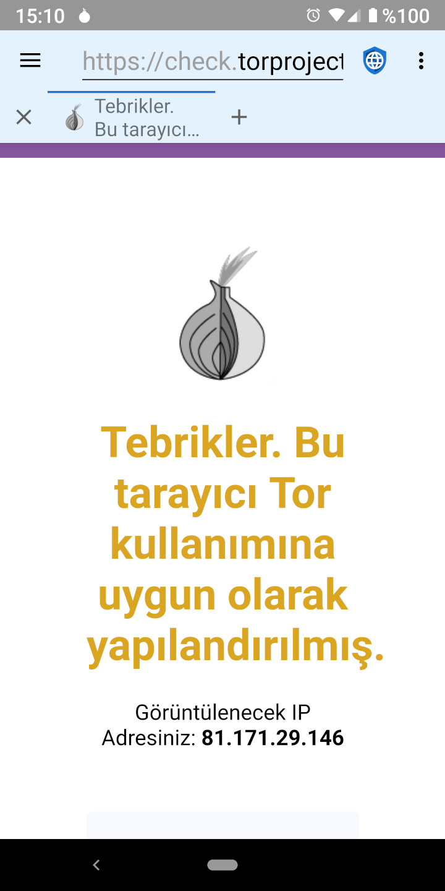

Tor ve Limitleri Tor ve Limitleri
Tor ve Limitleri Tor ve Limitleriİnternet gizliliğini ihlal etmek isteyen iki genel kötü oyuncu kategorisi vardır: İSS’lere (İnternet Servis Sağlayıcıları) erişimi olan kötü niyetli hükümetler ve sosyal ve reklam ağlarını yöneten mega şirketler. TOR (Soğan Yönlendirme Protokolü), kötü niyetli hükümetlerden (internet trafiğini gözetleyen) gizliliği korumakta kullanışlıdır fakat mega şirketlerden (web sunucularına kötü amaçlı kod yerleştiren) korumaz.
 Kötü Niyetli Hükümetler
Kötü Niyetli HükümetlerKötü niyetli hükümetler, sık sık muhalifleri ve aktivistleri cezalandırmak için kendi vatandaşlarını gözetler. Bunu genellikle yerel İSS’leri kullanarak ve onları, tüm kullanıcıların internet ziyaretlerinde kullandıkları IP adresleri gösteren bilgileri ifşa etmeye zorlayarak yaparlar. Tor, bir kullanıcının cihazından çıkan trafiği şifreleyerek ve son hedefe göndermeden önce internette üç ayrı sunucuya yönlendirerek bu gizlilik ihlalinin üstesinden gelmesi için tasarlanmıştır. Bu da, hiçbir İSS, sunucu veya web sitesinin, aynı anda hem kullanıcı cihazının IP adresini hem de son web sunucusunun IP adresini bilemeyeceği anlamına gelir. Kötücül hükümetler ve kontrolündeki İSS’ler, kullanıcının Tor kullandığını bilmelerine rağmen hangi web sunucularına eriştiğini söyleyemez. Bazı ülkelerde, Tor kullanmak yasadışı davranışların bir kanıtı olarak yorumlanabilir (“saklayacak bir şeyin olmasaydı, internet trafiğini şifrelemezdin.” mantığı) ve bu sebeple, yasadışı eylemlerde bulunduklarını düşündükleri kullanıcılar hükümetlerce cezalandırılabilir. Bu yüzden Tor gizlilik konusunda yardımcı olabilir, fakat her derde deva değildir.
Mega ŞirketlerBir kullanıcı bir web sunucusuna bağlandığında, web sunucusu kullanıcının IP adresini görebilir. Mükemmel bir teknik olmasa da, IP adresleri makul bir doğrulukla fiziksel adreslere dönüştürülebilir. Küçük web sunucuları, kendilerini ziyaret eden kullanıcılarının konumlarını belirlemek için IP adreslerine genel anlamda güvenirler. Tor, kullanıcının konumunu bu sunuculardan gizlemek için iyi bir çözümdür. Ancak, sosyal medya ve reklam ağlarına sahip büyük mega kuruluşlar, cihazlar ve IP adresler üzerinden kullanıcıları izlemek için tüm bilgileri kullanır. Bu profiller, JavaScript, çerezler, izleme kimlikleri ve browser fingerprinting (tarayıcı tanılama) dahil olmak üzere kullanıcıları tanımlamak için çeşitli teknikleri kullanır. İnternetteki web sitelerinin büyük çoğunluğu ya ana ağlardan birinden bir reklam yüklediğinden ya da JavaScript ile ilişkilendirilen sosyal medya simgelerini yerleştirdiklerinden dolayı, mega şirketler, hemen hemen her çevrimiçi kullanıcı için profil oluşturup internet aktivitelerini ilgisi olmayan sitelerden bile takip edebilirler.
Ziyaret edilen her siteyi, satın alınan her şeyi, satın almak için kullanılan her kredi kartını, eşyaların kargolandığı her adresi ve internete yüklenen her fotoğrafın GPS metaverilerini izlerler. Bu sayede, bir kullanıcının yaşı, cinsiyeti, medeni hali, adresi, politik görüşü, dini görüşü, aile çevresi, evcil hayvan sayısı ve elde edebildikleri her şey hakkında bir profil oluştururlar. Hatta yerel mağazalardan kredi kart işlem veri tabanlarını satın alırlar, böylece oluşturdukları profillerdeki kullanıcıların çevrimdışı satın alma modellerini de takip edebilirler. Tor, mega şirketlere karşı, bir kullanıcı hakkında bir IP adresinin gösterebileceğinden daha fazla bilgiye sahip olduklarından dolayı gerçek bir gizlilik koruması sağlamaz.
Mega şirketlere karşı en iyi gizlilik koruması, reklamları engellemek, JavaScript’i, DOM depolamayı ve çerezleri devre dışı bırakıp web gezintisi yapmak ve fingerprint yapılması zor olan bir tarayıcı kullanmak olacaktır.
 Tor Kullanma
Tor KullanmaKısıtlamalarına rağmen, Tor bazı koşullarda faydalı olabilir. Tor projesinin, F-Droid üzerinde ve Privacy Browser’ın dağıtımı yapılan her yerde erişilebilecek Orbot adlı Android uygulaması vardır. Privacy Browser, Orbot’u proxy olarak kullanmak için bir ayara sahiptir. Bu ayar açıldığında, Privacy Browser’ın uygulama çubuğunun varsayılan rengi açık griden açık mavi bir arkaplana dönecektir. Privacy Browser’in Orbot proxy ayarı etkin olduğunda, internet erişiminin çalışması için Orbot’un çalışması ve Tor’a bağlı olması gereklidir. İnternet trafiği birçok Tor devresi (node) üzerinden yönlendirildiği için, Tor kullanımı normal internet trafiğinden daha yavaş olacaktır.
 Tor ile Dosya İndirme
Tor ile Dosya İndirmeOrbot, proxy modunda çalışırken, Privacy Browser kullanarak internette gezinmek Tor ağı üzerinden yönlendirilir, fakat dosya indirmeleri yönlendirilmez. Bunun nedeni, Privacy Browser’ın dosyaları indirmek için bir proxy ayarı olmayan Android’in yerleşik indirme yöneticisi kullanmasıdır. Orbot aracılığıyla dosya indirmek isteyen kullanıcıların VPN modunu etkinleştirmesi gerekir.